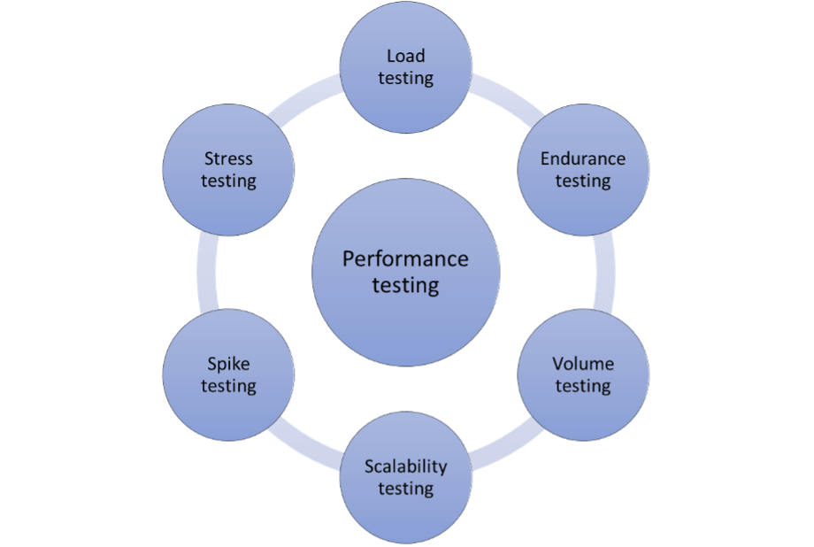

性能测试概述
什么是性能测试
性能测试
性能测试用于观测软件在特定环境下（资源配置，网络，并发数）的性能表现（响应时间，吞吐量，资源利用率），从而评估该软件的可靠性和稳定性，测试主要从并发数和时间两个维度来进行
常见性能测试方法

测试方法
- 负载测试
- 使测试对象承担逐渐递增的工作量，以评测和评估测试对象在不同工作量条件下的性能行为，以及持续正常运行的能力。
- 工作量增大到阈值，来获取该测试对象的最大负载
- 获取系统在常规环境下不同负载下的性能表现
- 包括容量测试（繁重数据负载）和耐受测试（长时间）
- 压力测试
- 给测试对象施加超过最大阈值的压力，并且持续压测，观察被测对象行为什么时候会崩溃，是否会内存泄漏等
- 给系统施加非常规压力，测试系统在艰难环境下的表现
- 包括尖峰测试（流量突增）